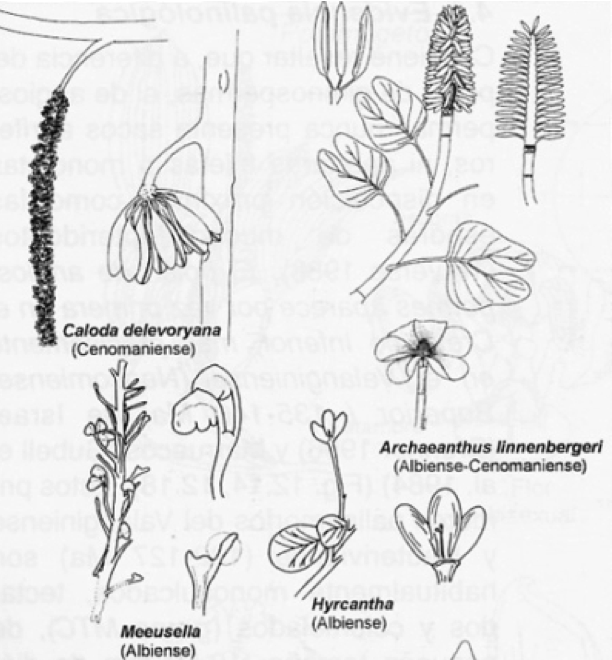
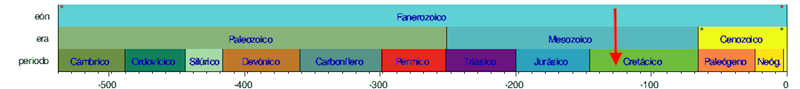
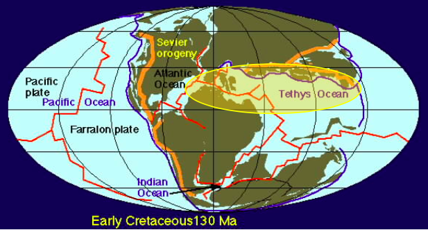
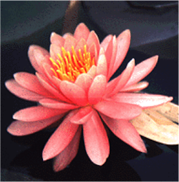
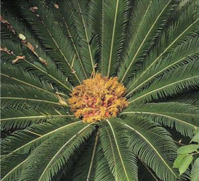
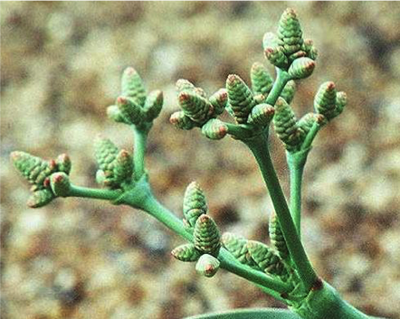

El "abominable
misterio" del origen de las flores
|
- “Abominable misterio” fue la
expresión que Darwin utilizó al referirse y tratar
de entender el origen, rápida diversificación e
incremento en la dominancia de las plantas con
flores (angiospermas) en la Tierra (El Origen de
las Especies). (2)
|
- Darwin
era gradualista y la ausencia de fósiles adecuados
inducía a pensar que las plantas con flores
aparecieron de repente y triunfaron rápidamente.
|
- El
término “abominable” aludía a la negativa y
frustración de Darwin por aceptar que el origen de las
plantas con flores pudiera haber sido repentino y
contrario a la “acumulación de cambios graduales” que
planteaba y defendía en su obra. Solo se conocían
algunos fósiles escasos del Cretácico medio.
- En un corto espacio de tiempo las
Angiospermas se diversificaron enormemente y
dominaron casi todos los hábitats terrestres.
|
- Who,
what, when, where, why. Quién, qué, cuándo,
dónde, por qué. Las 5W son la base del reporterismo.
|
|
|
- Aparece
de forma "brusca" una gran diversidad de estructuras
florales y especies de Angiospermas.
|
|

|
|
|
- Cretácico
inferior de forma cierta (129-121 m.a.).
|

|
|
|
- Zonas
tropicales de 0º a 30º de latitud N - Alrededores del
Tetis.
|

|
|
|
- Varios
autores apuntan a estas causas:
- Relaciones
animal-planta.
- Aparición
de nuevos hábitats.
- Eficacia
reproductora.
|
A
partir de qué antecesores
|
- Dos
teorías clásicas clásicas:
- Teoría
Ranaliana o Euántica.
- Teoría
Pseudántica.
- Nuevas
ideas.
|
T. Euántica:
A partir de verdaderas flores primitivas de
gimnospermas.
Escuela Ranaliana.
Arber & Parkin, 1909
|
 
|
T. Pseudantica:
simplificación a
partir de estróbilos masculinos y
femeninos similares a los de Gnetales.
Escuela Engleriana.
Wettstein, 1907
|

|
Nuevas hipótesis:
|
- Meeuse
(1987) All about angiosperms
- Caracteres
típicamente angiospérmicos aparecen sueltos en
gimnospermas.
- Las
angiospermas primitivas carecen de algunos de los
rasgos supuestamente esenciales del grupo.
- El
carpelo no es homólogo a una hoja fértil, sino a una
cúpula como la de gimnospermas fósiles.
- El
paradigma ranaliano es una patraña.
- La
flor es una estructura formada por varios ejes, no
un simple estróbilo.
- Las Angiospermas son
POLIFILÉTICAS mientras no se demuestre lo
contrario.
- Frohlich
& Parker (2000) The mostly male theory
of flower evolutionary origin: from
genes to fossils. Systematic Botany 25: 155-170.
- La
flor angiospérmica sería el resultado de una
mutación del complejo génico “Floricaula/Leafy”.
- Y
esta hipótesis hace al problema menos “abominable” y
más “experimentable”.
|